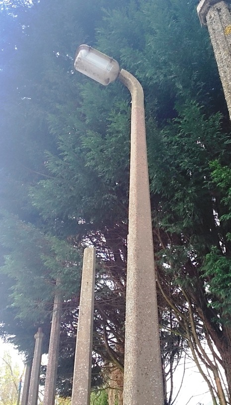
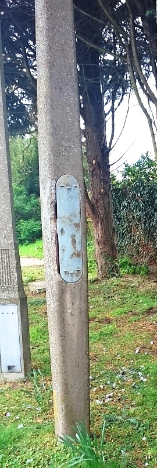

Tarslag concrete lamp posts
Click here to go to the Beno lamp post guide homepage
1950s
Tarslag were a large road surfacing company. In the early 1950s they started making their own design of concrete lamp post called Broadcrete. In the mid 50s they sold their lamp post design (Broadcrete) to Concrete Utilities (and CU didn't produce tham for long). These lamp posts are now very rare, very few of them were built (you can distinguish them by their unusual shaped door). In 1959 Tarslag were taken over by Tarmac plc.
There is a Concrete Utilites Broadcrete at the Concrete Utilites lamp post museum.


Click here to go to the Beno lamp post guide homepage